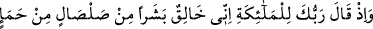
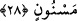

Âdem (a.s.)’ın üzerine aşkın feyzi döküldüğünden beri
Âdem (a.s.)’dan önce topraktan yaratılmış kimse yoktu. Âdem (a.s.) topraktan
yaratıldı ki secdeye meyyâl, alçak gönüllü, oldukça zelil ve boynu bükük bir kul
olabilsin. Çünkü secde tam ubûdiyyet makâmıdır. Hâsılı her cins kendi cinsine
meyleder. Bu sebeple Âdem (a.s.) Allah Teâlâ’ya karşı alçakgönüllülük arzederken,
İblis ateşten yaratılmış olduğundan cinsine meylederek tevâzu göstermedi. Büyüklendi,
(secdeden) yüz çevirdi ve büyüklük iddiâsında bulundu.
Hikmet ehli der ki: Hiç şüphesiz Allah Teâlâ, Âdem (a.s.)’ı özel bir görünümde, özel
bir maddeden özel bir sûrette yaratmaya kâdirdir. Oysa onu önce topraktan, sonra
çamurdan, sonra pis kokulu cıvık bir balçıktan sonra da pişmiş çamura benzeyen bir
balçıktan yaratmıştır. Bu, ya her şeyi kapsayan sırf hikmetten ibaret olan ilâhî meşietten
ötürü böyle olmuştur. Ya da böyle bir yaratışta meleklere yol gösterme, onların ve diğer
mahlûkâtın maslahatını gözetme isteği söz konusu olduğu için böyle olmuştur. Çünkü
insanın bütün bu maddelerden yaratılmış olması, bir şeyin kendi şekil ve cinsinden
yaratılmış olmasından çok daha hayranlık vericidir.
28. Hani Rabbin meleklere demişti ki: “Ben kupkuru bir çamurdan, şekillenmiş
kara balçıktan bir insan yaratacağım.”
“Hani Rabbin” yeryüzünde hilâfet konusunda “meleklere demişti ki:” Yâni, ey
Muhammed Rabbinin meleklere şöyle dediği vakti hatırla:
Fakir (Bursevî) der ki: Buradaki melekler hakkında büyük bir ihtilâf vardır. Doğrusu
ehlullahın şu görüşüdür: Meleklere söylenen söz aşağıda gelecek olan; “Ben kupkuru
bir çamurdan, şekillenmiş kara balçıktan bir insan yaratacağım.” sözüdür. Âdem
(a.s.) ’a secde edenler ise ruhlar mertebesinden cisimler mertebesine tenezzül eden
meleklerdir. Bu meleklere ister gökle ilgili ister yerle ilgili olsun büyük-küçük tüm
melekler ile Cebrâil (a.s.) dâhildir. Çünkü bütün bu melekler lâtif cismânî elbiselere
bürünmüşlerdir. “Böbürlendin mi yoksa, zâten yüce olanlardan mısın?” (Sâd, 38/75)
âyetindeki ‘yüce olanlar’dan maksad, dâimâ ruhlar âleminde kalan ve Hakk’ı müşâhede
nûruna gark olmuş bulunan müheyyemûn meleklerdir. Onları, bırakın Âdem’i veya
başka birini, kendilerinin bile farkında değillerdir. Bu melekler, cem’iyyet (kahır-lütuf,
cemâl-celâli kendilerinde toplamak) ve kemâl bakımından değilse de mevki şerefi
bakımından insanlardan daha hayırlıdır. İnsanlar, fazîlet ve kemâl rütbesi açısından,
hatta mevki şerefi açısından gök ve yer meleklerinden üstündür. Çünkü bütün bu
melekler tek bir el tarafından yaratılan varlıklar olmaları hasebiyle (Cenâb-ı Hakk’ın